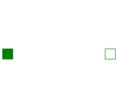

This element describes the Stribeck friction characteristics of a sliding mass, i. e. the frictional force acting between the sliding mass and the support. Included is a hard stop for the position.
The surface is fixed and there is friction between sliding mass and surface. The frictional force f is given for positive velocity v by:
f = F_Coulomb + F_prop * v + F_Stribeck * exp (-fexp * v)

The distance between the left and the right connector is given by parameter L. The position of the center of gravity, coordinate s, is in the middle between the two flanges.
There are hard stops at smax and smin, i. e. if
flange_a.s >= smin and flange_b.s
<= xmax the sliding mass can move freely.
When the absolute velocity becomes zero, the sliding mass becomes stuck, i.e., the absolute position remains constant. In this phase the friction force is calculated from a force balance due to the requirement that the absolute acceleration shall be zero. The elements begin to slide when the friction force exceeds a threshold value, called the maximum static friction force, computed via:
maximum_static_friction = F_Coulomb + F_Stribeck
This requires the states Stop.s and Stop.v . If these states are eliminated during the index reduction the model will not work. To avoid this any inertias should be connected via springs to the Stop element, other sliding masses, dampers or hydraulic chambers must be avoided.
For more details of the used friction model see the following reference:
The friction model is implemented in a "clean" way by state events and leads to continuous/discrete systems of equations which have to be solved by appropriate numerical methods. The method is described in:
More precise friction models take into account the elasticity of the material when the two elements are "stuck", as well as other effects, like hysteresis. This has the advantage that the friction element can be completely described by a differential equation without events. The drawback is that the system becomes stiff (about 10-20 times slower simulation) and that more material constants have to be supplied which requires more sophisticated identification. For more details, see the following references, especially (Armstrong and Canudas de Witt 1996):
The dissipated energy is transported in form of heat to the optional heatPort connector that can be enabled via parameter "useHeatPort". Independently whether the heatPort is or is not enabled, the dissipated power is defined with variable "lossPower". If contact occurs at the hard stops, the lossPower is not correctly modelled at this time instant, because the hard stop would introduce a Dirac impulse in the lossPower due to the discontinuously changing kinetic energy of the mass (lossPower is the derivative of the kinetic energy at the time instant of the impact).
| Name | Description |
|---|---|
|  PartialFrictionWithStop | Base model of Coulomb friction elements with stop |